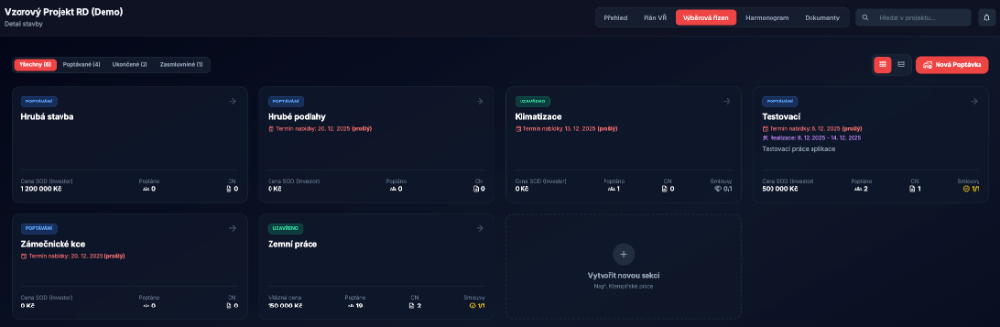
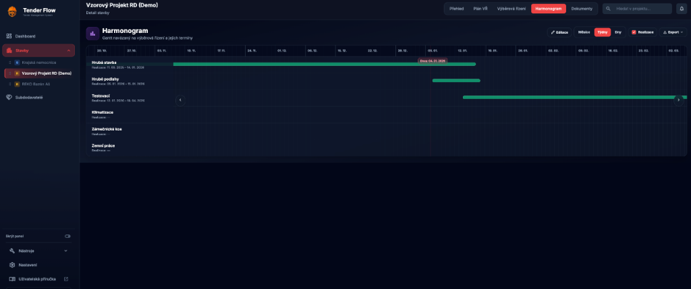
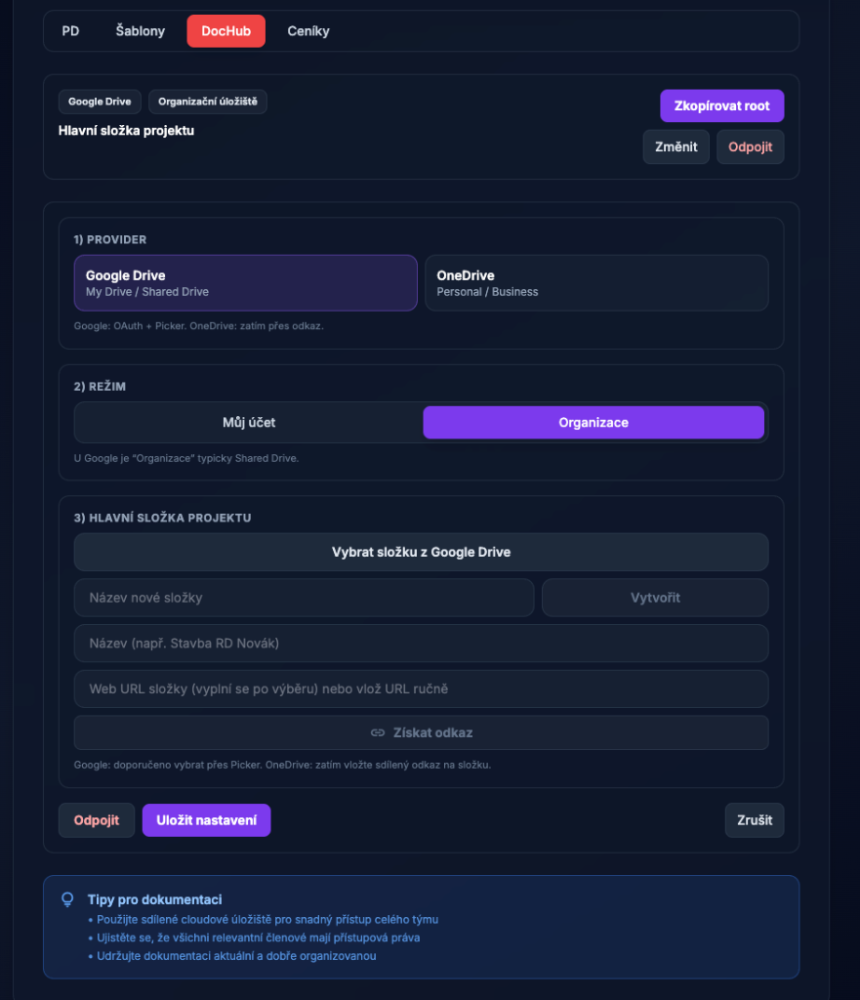
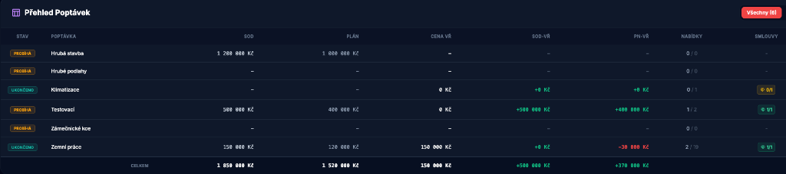

Tender Flow – Uživatelská příručka
Tato příručka popisuje práci v aplikaci Tender Flow pro řízení staveb, výběrových řízení a subdodavatelů.
Verze příručky: 1.7 • Datum: 2026‑02‑17 • Aplikace: v1.3.2

📋 Obsah
- 🎉 Novinky
- 🎯 Účel a role
- 🔐 Přihlášení a účet
- 🏢 Organizace a předplatné
- 🧭 Navigace v aplikaci
- 📊 Dashboard
- 🏗️ Detail stavby (záložky)
- 📅 Plán VŘ
- 📋 Výběrová řízení (Pipeline)
- 📜 Smlouvy
- 📆 Harmonogram
- 📁 Dokumenty a šablony
- 👥 Subdodavatelé (Kontakty)
- 🏠 Správa staveb
- 📈 Přehled staveb (analytika)
- ⚙️ Nastavení aplikace
- 📊 Excel nástroje
- 🔗 URL Zkracovač
- 💻 Tender Flow Desktop
- 🛡️ Administrace systému
- 📝 Registrace a whitelist
- 📧 Seznam povolených emailů
- 👤 Správa uživatelů a rolí
- 🔄 Import a synchronizace kontaktů
- 🤖 AI funkce
- ❓ Časté otázky
🎉 Novinky (poslední změny)
📱 v1.3.2 📖 Verze příručky 1.7
Verzi aplikace najdete vlevo dole v sidebaru.
- Uživatelská příručka doplněna: rozšířené a sjednocené popisy hlavních modulů včetně administrace, AI funkcí a desktop sekce.
- Obsah příručky upraven: opravené interní odkazy a aktualizované metainformace verze/datum.
- Release poznámky sjednocené: doplněna sada release notes pro aktuální patch release.
v1.3.1
- Smlouvy (projektová záložka): kompletní modul pro evidenci smluv, dodatků a čerpání v rámci konkrétní stavby.
- Zpracování dokumentů ke smlouvám: možnost předvyplnit data ze souboru (např. PDF) a následně je potvrdit/upravit.
- Stabilita oprávnění a předplatného: vylepšení vyhodnocování dostupných funkcí a konzistence přístupů napříč organizacemi.
- Desktop UX: uživatelská příručka se v desktop verzi otevírá přímo v aplikaci.
v1.2.3
- Emailové šablony (Resend): aktualizace šablon a konfigurace odesílání.
- Reset hesla: opravy routingu a celého flow obnovy hesla.
v1.2.1
- OCR vylepšení: přesnější rozpoznávání textu.
- Build/desktop stabilita: technické úpravy build procesu Electron aplikace.
v0.9.6 v08
- AI Key Persistence: AI klíče se nyní ukládají bezpečně v databázi (
app_secrets) a jsou dostupné pro všechny uživatele organizace. - AI Testování: Nový nástroj pro administrátory k testování AI klíčů a ověření funkčnosti (Nastavení → Administrace → AI Testování).
- Excel Indexer: Nový pokročilý nástroj pro dvou-fázové zpracování Excel rozpočtů s automatickým indexováním a doplněním popisů.
- Index Matcher: Zjednodušená verze Indexer pro rychlé doplnění popisů podle indexu.
- URL Zkracovač: Nový nástroj pro vytváření zkrácených odkazů s vlastními aliasy (tenderflow.cz/s/alias).
- Desktop aplikace: Nativní Electron aplikace pro Windows a macOS s rozšířenými funkcemi (Touch ID, nativní souborový systém, lokální Excel nástroje).
- Mailto IPC Bridge: Spolehlivější otevírání emailových klientů v desktop verzi pomocí IPC komunikace.
v0.9.5
- AI prompty: Možnost přizpůsobení systémových AI promptů pro grafy a reporty (admin).
- DocHub integrace: Vylepšená práce s lokálními složkami v Tender Flow Desktop.
- Stabilita: Různá vylepšení stability a opravy chyb.
v0.9.4-260104
- Harmonogram: Přidána záložka „Harmonogram“ v detailu stavby (Gantt) včetně exportů (XLSX/PDF).
- Organizace (tenant): Uživatel je automaticky přiřazen do organizace; pro osobní emaily se vytváří osobní organizace.
- Statusy kontaktů: Statusy jsou nyní oddělené po organizacích (každá organizace má své nastavení).
- Administrace: Admin je nejvyšší role (sjednocení oprávnění pro správu uživatelů/registrací).
v0.9.4-260102
- Dokumenty / Ceníky: Přidána nová podsekce „Ceníky“ pro správu odkazů na projektové ceníky a rychlou integraci s odpovídající složkou v DocHubu.
- Perzistence dat: Implementováno ukládání odkazů na dokumentaci a ceníky přímo do databáze projektu.
v0.9.3-260101
- Hlavní stránka / DEMO: pro ceník a možnost „DEMO“ bylo vytvořeno demo s provizorními (generovanými) daty pro možnost seznámení se s aplikací.
- Funkčnost (AI): úprava AI backendové části pro lepší a rychlejší fungování; implementace cache AI, aby nedocházelo k neustálému volání a přegenerování reportů.
- Dashboard / Stavba (UX): vylepšený přehled poptávek pro rychlejší práci; nově je možné prokliknout se z přehledu přímo do kanbanu dané poptávky.
- Dashboard / Stavba (UX): UX vylepšení obsahuje také pop‑okna v designu aplikace.
v0.9.2
- Sidebar: přidána možnost tlačítkem schovat postranní panel a získat tak větší plochu a lepší čitelnost.
- Hlavní stránka: vytvořena nová landing page se základními informacemi o aplikaci.
- Routy přihlášení/registrace: přihlášení a vytvoření účtu jsou na samostatných routách
tenderflow.cz/loginatenderflow.cz/register.
v0.9.1
- Subdodavatelé: možnost přidávat další specializace bez nutnosti zdvojovat dodavatele v databázi.
- Kontakty: k jednomu subdodavateli lze evidovat více kontaktů (posiluje potřebu mít jen jednoho dodavatele).
- Databáze: provedena úprava databáze v návaznosti na změny dle updatu.
- Import kontaktů: import/synchronizace slučuje záznamy podle názvu firmy (case-insensitive) a doplňuje specializace i kontakty bez duplicit.
v0.9.0
- Whitelist (registrace): registrace není povolena všem uživatelům, ale jen těm, kteří jsou na whitelistu (prozatímní řešení pro postupnou integraci).
- Poznámka: whitelist dočasně nahrazuje možnost vlastního mailového hostingu, která bude potřeba dále implementovat.
- Role: systém obsahuje kritickou roli admin pro možnost nastavení dodatečných rolí; každý tenant má svého „administrátora“.
- Seznam rolí v tomto updatu: Přípravář • Hlavní stavbyvedoucí • Stavbyvedoucí • Technik.
- Práva dle rolí: každá role určuje, k čemu má uživatel přístup a jaké akce může provádět; nejvyšší práva má aktuálně Přípravář (hlavní uživatel a zadavatel dat).
- Databáze: proběhla úprava databáze, tabulek a správy dat, aby vyhovovala nově aplikovaným procesům a funkcím.
v0.8.0
- Dashboard: srdcem aplikace je přístup ke všem stavbám uživatele a rychlému přehledu základních informací; možnost přepínání staveb přes rozevírací menu.
- Subdodavatelé: přidán nový stav „nedoporučuji“ pro možnost varování kolegů před použitím problémového subdodavatele.
- Správa staveb:
- ve vašich seznamech staveb nyní vidíte i sdílení,
- archivace stavby: při archivaci se stavba přesune do archivu (pole
archiv), odebere se z bočního panelu Stavby, - archivované stavby lze vrátit zpět tlačítkem pro obnovu,
- sdílení zůstává stejné; je vidět seznam sdílených osob a lze je odebrat,
- propsání stavby jinému uživateli může trvat několik minut.
- Stavby (sidebar): nově lze stavby přesouvat a měnit jejich pořadí; funkce je experimentální (může být odebrána).
- Přehled stavby:
- přepracovaný vzhled (jednodušší a přehlednější),
- panelové zobrazení poptávek nahrazeno tabulkovým zobrazením,
- přidána tabulka s bilancí výběrů a přehledem stavu,
- filtrování přehledu: všechny | poptávané | ukončené | zasmluvněné,
- probíhá testování logiky (mohou se objevovat dodatečné opravy výjimek funkčnosti).
- Plán VŘ (nový modul):
- možnost vytvořit výběrové řízení a přidat mu průběh (od–do),
- po vytvoření se vygeneruje tlačítko „Vytvořit“ a stav VŘ „čeká na vytvoření“,
- stiskem „Vytvořit“ dojde k vytvoření výběru ve Výběrových řízeních a stav se přepne na „probíhá“,
- stav vždy reflektuje průběh daného výběrového řízení.
- Výběrová řízení (dříve pipelines):
- přejmenování pro intuitivnější navigaci,
- možnost vytvářet vlastní šablony poptávky do emailu,
- filtrování dle stavu,
- karta poptávky obsahuje cenu SOD v základu; pokud má výběr vítěze, přepíše se na cenu vítěznou,
- karta nabídky zaznamenává až 3 kola VŘ; do aktuální ceny se počítá aktivně vybrané kolo,
- karta subdodavatele zobrazuje všechny jeho ceny z jednotlivých kol (případně poznámku),
- přesunutím karty na vítězné pole se zobrazí ikona poháru (vítěz),
- pro vítěze se zobrazuje ikona smlouvy: šedo‑bílá → blikající odškrtnutí (smlouva vyřízena),
- stav smluv se zobrazuje také na kartě VŘ (např. 0/2 = dva vítězové, nula smluv),
- po aktivaci všech smluv se zobrazí plaketka s odškrtnutím (hotovo),
- uzavření výběru probíhá na kartě daného výběru,
- export do Excelu a PDF (formát dokumentu se bude dále ladit),
- email nevybraným: otevře výchozí emailový klient se zprávou pro všechny relevantní subdodavatele; odesílání je přes skrytého příjemce (BCC).
- Přehled staveb:
- rozevírací menu pro možnost přepnutí stavby,
- pilotní analýza pomocí umělé inteligence (TenderFlow AI),
- export analýzy do PDF (časové razítko a možnost sdílení),
- analýza vychází z dostupných dat (množství informací, spuštěná VŘ, stav rozpracovanosti).
Účel a role
Tender Flow je centrální místo pro evidenci staveb a řízení výběrových řízení: od plánování poptávek, přes oslovení subdodavatelů, až po vyhodnocení nabídek a evidenci vítěze.
Pozn.: odeslání emailu probíhá přes váš výchozí emailový klient (funkce používá mailto:).
Přihlášení a účet
- Zadejte email a heslo.
- Klikněte na Přihlásit.
- Odhlášení najdete dole v levém panelu (ikonka
logout).

💡 Tip: Uložte si přihlášení pro rychlejší přístup příště.
Organizace a předplatné
Tender Flow funguje jako multi-tenant aplikace: každý uživatel patří do organizace (tenant) a data jsou mezi organizacemi oddělená.
- Firemní email: typicky se přidáte do organizace podle domény (nebo se pro doménu vytvoří nová organizace).
- Osobní email (např. Gmail/Seznam): vytvoří se osobní organizace pro vaše použití.
Organizace ovlivňuje zejména:
- Předplatné (dostupnost vybraných funkcí v menu).
- Statusy kontaktů (každá organizace má vlastní seznam a barvy).
Tip: pokud některou část aplikace nevidíte (např. Import kontaktů, Přehled staveb, Excel nástroje), je pravděpodobně skrytá kvůli nastavení předplatného / oprávnění.
Navigace v aplikaci
V levém panelu (sidebar) přepínáte hlavní části aplikace a vybíráte konkrétní stavbu.
- 📊 Dashboard – přehled vybrané stavby a export.
- 🏗️ Stavby – seznam staveb (projekty).
- 👥 Subdodavatelé – databáze kontaktů.
- 🔧 Nástroje – skupina doplňků (např. Správa staveb, Přehled staveb, Import kontaktů, Excel nástroje; dle předplatného).
- ⚙️ Nastavení – profil, vzhled, statusy kontaktů, administrace (dle oprávnění).

Dashboard
Dashboard zobrazuje přehled jedné vybrané stavby. V hlavičce můžete přepnout stavbu a vyexportovat XLSX.

🎯 Co dashboard zobrazuje:
- Přehled poptávek a jejich stav
- Klíčové metriky stavby
- Rychlý přístup k nejčastějším akcím
- Možnost exportu dat do Excelu
Po kliknutí na stavbu v sidebaru se otevře detail se záložkami:
- 📊 Přehled – rozpočty, stav, metriky.
- 📅 Plán VŘ – plánování výběrových řízení.
- 📋 Výběrová řízení – pipeline poptávek a nabídek.
- 📜 Smlouvy – evidence smluv, dodatků a čerpání.
- 📆 Harmonogram – Gantt navázaný na termíny výběrových řízení.
- 📁 Dokumenty – odkazy na dokumentaci a šablony poptávek.

📅 Plán VŘ
Plán VŘ slouží k naplánování VŘ v čase a (dle potřeby) k jejich převodu do poptávek.

🖼️ Ukázka: Plán výběrových řízení

📋 Výběrová řízení (Pipeline)
Výběrová řízení jsou organizovaná po poptávkách (kategorie prací). Nabídky subdodavatelů přesouváte mezi sloupci (drag & drop).

🖼️ Ukázka: Kanban board výběrových řízení

Stavy nabídky (sloupce)
- Oslovení – připraven k oslovení (může se zobrazit „Generovat poptávku“).
- Odesláno – poptávka odeslána, čeká se na reakci.
- Cenová nabídka – dorazila nabídka.
- Užší výběr – shortlist.
- Jednání o SOD – finalisté / jednání.
- Odmítnuto – neúspěšní.
Karta nabídky
Na kartě nabídky evidujete cenu, tagy, poznámky a případně generujete poptávkový email.

📜 Smlouvy
Záložka Smlouvy slouží pro finanční a smluvní řízení konkrétní stavby.
- 📊 Přehled – souhrn KPI (počty smluv, hodnota, čerpání, retence).
- 📄 Smlouvy – seznam smluv, vytváření/editace, vazba na dodavatele, stav a hodnotu.
- ✏️ Dodatky – změny smluv (cenové i termínové) navázané na vybranou smlouvu.
- 💰 Čerpání – evidence průvodek/čerpání a kontrola zůstatku vůči aktuální hodnotě smlouvy.
💡 Tip: Při zakládání lze data ze smluvních dokumentů předvyplnit automaticky a před uložením je ručně potvrdit.
📆 Harmonogram
Harmonogram je Ganttův přehled termínů, který se automaticky naplňuje z dat v projektu.
- Jak se plní: doplňte termíny v Plán VŘ (od–do) nebo termín v detailu Výběrových řízení (deadline).
- Zobrazení: přepínání měřítka Měsíce / Týdny / Dny, volitelně přepínač Realizace.
- Editace: tlačítko Editace umožní upravit termíny přímo v harmonogramu.
- Export: menu Export nabízí
XLSX,PDFaXLSX s grafem.

📁 Dokumenty a šablony
V záložce Dokumenty najdete podzáložky:
- 📂 PD – odkaz na projektovou dokumentaci (Drive/SharePoint apod.).
- 📝 Šablony – šablona poptávky a šablona „email nevybraným" (lze použít interní editor šablon, nebo externí odkaz/soubor).
- 📦 DocHub – napojení na strukturu složek projektu (pokud je povoleno).
- 💵 Ceníky – odkaz na projektové ceníky + rychlý odkaz na složku
Ceníkyv DocHubu (pokud je připojen).
V praxi zde typicky nastavíte:
- odkaz na dokumentaci stavby (Drive/SharePoint apod.),
- šablony emailů (poptávka / nevybraní),
- ceníky a související složky.

DocHub: Tender Flow Desktop (lokální disk)
Pro lokální práci se složkami použijte provider Tender Flow Desktop.
Nastavení v aplikaci:
- Projekt → Dokumenty → DocHub.
- Provider: Tender Flow Desktop.
- Vyberte nebo zadejte cestu ke kořenové složce projektu.
- Klikněte Připojit a poté Synchronizovat.
👥 Subdodavatelé (Kontakty)
Databáze kontaktů pro přidávání do poptávek. Podporuje filtry, výběr více řádků a hromadné akce (např. doplnění regionu pomocí AI – pokud je povoleno).
- 👤 Více kontaktů na firmu: u jedné firmy můžete evidovat více kontaktních osob (jméno, pozice, telefon, email).
- 🏷️ Více specializací: specializace jsou seznam (používá se pro filtrování i výběr do poptávek).

🖼️ Ukázka: Databáze subdodavatelů

🏠 Správa staveb
Slouží pro vytváření staveb, změny statusu, archivaci a sdílení (dle oprávnění).

Sdílení podporuje dvě úrovně oprávnění: ✏️ Úpravy a 👁️ Pouze čtení.

📈 Přehled staveb (analytika)
Manažerské souhrny napříč stavbami: metriky, grafy a volitelně AI analýza.

🖼️ Ukázka: Přehled poptávek

⚙️ Nastavení aplikace
- 👤 Profil – zobrazované jméno, vzhled (tmavý režim, primární barva, pozadí) a správa statusů kontaktů.
- 📥 Import kontaktů – synchronizace z URL / ruční upload (může být v sekci Nástroje dle předplatného).
- 🔓 Excel Unlocker PRO – odemknutí
.xlsxlokálně v prohlížeči (soubor se nikam neodesílá; dle předplatného). - 🔀 Excel Merger PRO – slučování Excel listů; v desktop verzi nativní, ve web verzi externí aplikace (dle předplatného).
- 📊 Excel Indexer – dvou-fázová indexace a zpracování rozpočtů s automatickým doplněním popisů.
- 🔍 Index Matcher – rychlé doplnění popisů podle indexu (zjednodušená verze Indexer).
- 🔗 URL Zkracovač – vytváření zkrácených odkazů s vlastními aliasy (dle předplatného).
- 🛡️ Administrace systému (Admin) – registrace, whitelist, uživatelé, předplatné, AI.

📊 Excel nástroje
Tender Flow nabízí sadu nástrojů pro práci s Excel soubory.
🔓 Excel Unlocker PRO
Nástroj pro odemknutí ochrany .xlsx souborů. Funguje lokálně v prohlížeči – soubor se nikam neodesílá.
Použití:
- Otevřete Nastavení → Excel Unlocker PRO
- Klikněte "Vybrat soubor" a nahrajte chráněný Excel
- Klikněte "Odemknout"
- Stáhněte odemčený soubor
Umístění: Nastavení → Excel Unlocker PRO (dle předplatného)
🔀 Excel Merger PRO
Nástroj pro slučování více listů z různých Excel souborů do jednoho souboru.
- 💻 Desktop verze: Nativní zpracování pomocí lokálních Python skriptů
- 🌐 Web verze: Externí aplikace v iframe (vyžaduje konfiguraci adminem)
Umístění: Nastavení → Excel Merger PRO (dle předplatného)
📊 Excel Indexer
Excel Indexer je pokročilý nástroj pro automatické indexování a zpracování velkých Excel rozpočtů. Nástroj pracuje ve dvou fázích.
Fáze 1: Vložení sloupce Oddíly
V první fázi nástroj:
- Hledá značky "D" ve sloupci F (markerColumn)
- Přečte oddíl ze sloupce G (sectionColumn)
- Vloží nový sloupec B s názvem "Oddíly"
- Vyplní tento sloupec názvem oddílu pro všechny řádky do další značky
Nastavení sloupců:
- Marker Column (F): Sloupec kde se hledají značky "D"
- Section Column (G): Sloupec odkud se čte název oddílu
Výstup fáze 1:
- Soubor s vloženým sloupcem "Oddíly"
- Posun ostatních sloupců doprava o 1
Fáze 2: Doplnění popisů
Ve druhé fázi nástroj:
- Používá výstup z Fáze 1
- Hledá kódy položek ve sloupci G (po posunu, původně F)
- Páruje kódy s indexem položek (nahrán z Excelu)
- Doplňuje popisy do sloupce C (po posunu, původně B)
Nastavení sloupců:
- Code Column (G): Sloupec s kódy položek (po vložení Oddílů)
- Desc Column (C): Sloupec kam se doplní popisy (po vložení Oddílů)
Volitelné funkce:
- 📋 Rekapitulace: Vytvoření rekapitulačního listu s přehledy
Jak použít Excel Indexer
Příprava indexu:
- Připravte Excel soubor s indexem (2 sloupce: Kód, Popis)
- V Excel Indexer klikněte "Nahrát index z Excelu"
- Vyberte váš indexový soubor
Nahrání rozpočtu:
- Klikněte "Vybrat soubor rozpočtu"
- Vyberte váš Excel rozpočet
Fáze 1 - Oddíly:
- Zkontrolujte nastavení sloupců (F pro značky, G pro oddíly)
- Klikněte "Zpracovat Fázi 1"
- Stáhněte výstup nebo přejděte k Fázi 2
Fáze 2 - Popisy:
- Automaticky použije výstup z Fáze 1
- Zkontrolujte nastavení sloupců (G pro kódy, C pro popisy)
- Zapněte "Vytvořit rekapitulaci" pokud chcete
- Klikněte "Zpracovat Fázi 2"
- Stáhněte finální soubor
Umístění: Nastavení → Excel Indexer
🔍 Index Matcher
Index Matcher je zjednodušená verze Excel Indexer pro rychlé doplnění popisů podle indexu.
Funkce
- 📥 Import indexu: Načtení slovníku kód→popis z Excel souboru
- 💾 Uložení indexu: Index se ukládá lokálně pro opakované použití
- ⚡ Automatické párování: Doplnění popisů do sloupce B podle kódů ve sloupci F
Jak použít
Nahrání indexu (jednou):
- Klikněte "Nahrát index z Excelu"
- Vyberte soubor s 2 sloupci: Kód | Popis
- Index se uloží pro příští použití
Zpracování rozpočtu:
- Klikněte "Vybrat soubor rozpočtu"
- Vyberte Excel soubor s kódy ve sloupci F
- Klikněte "Zpracovat rozpočet"
- Stáhněte soubor s doplněnými popisy
💡 Tip: Pro komplexnější zpracování s oddíly a rekapitulací použijte Excel Indexer.
Umístění: Nastavení → Index Matcher (pokud je dostupný dle předplatného)
🔗 URL Zkracovač
Nástroj pro vytváření zkrácených odkazů s vlastními aliasy. Zkrácené odkazy mají formát tenderflow.cz/s/váš-alias.
Funkce
- 🏷️ Vlastní aliasy: Vytvořte snadno zapamatovatelné zkratky
- 📈 Statistiky: Sledování počtu kliknutí
- 📋 Správa odkazů: Přehled všech vašich zkrácených odkazů
- 📋 Kopírování: Rychlé zkopírování odkazu do schránky
- 🗑️ Mazání: Odstranění nepotřebných odkazů
Jak vytvořit zkrácený odkaz
- Otevřete Nastavení → URL Zkracovač
- Do pole "URL adresa" vložte dlouhý odkaz
- Do pole "Vlastní alias" zadejte požadovanou zkratku (např.
projekt-abc) - Klikněte Zkrátit
- Zkrácený odkaz se objeví v seznamu a můžete jej zkopírovat
Příklad:
- Původní URL:
https://drive.google.com/drive/folders/1aB2cD3eF4gH5iJ6kL7mN8oP9qR0sT - Alias:
projekt-abc - Zkrácený odkaz:
tenderflow.cz/s/projekt-abc
Správa odkazů
V seznamu zkrácených odkazů vidíte:
- 🏷️ Alias: Vaše zkratka
- 🎯 Cílová URL: Původní dlouhý odkaz
- 👁️ Kliknutí: Počet použití odkazu
- 📅 Vytvořeno: Datum vytvoření
Akce:
- 📋 Kopírovat: Zkopíruje zkrácený odkaz do schránky
- 🗑️ Smazat: Odstraní zkrácený odkaz
Umístění: Nastavení → URL Zkracovač (dle předplatného)
💻 Tender Flow Desktop
Tender Flow Desktop je nativní desktopová aplikace postavená na Electronu. Nabízí rozšířené funkce oproti webové verzi.
Výhody desktop verze
| Funkce | 💻 Desktop | 🌐 Web |
|---|---|---|
| Přístup k souborům | Nativní | Omezené |
| Excel nástroje | Lokální Python | HTTP API |
| Úložiště tokenů | OS Keychain (bezpečnější) | localStorage |
| Auto-update | ✅ | ❌ |
| Folder watcher | ✅ | ❌ |
| Biometrické přihlášení | ✅ (Touch ID/Windows Hello) | ❌ |
| Mailto odkazy | IPC Bridge (spolehlivější) | Prohlížeč |
Instalace
Windows
- Stáhněte instalační soubor
Tender-Flow-Setup-x.x.x.exe - Spusťte instalátor
- Aplikace se nainstaluje do
C:\Program Files\Tender Flow - Desktop ikona se vytvoří automaticky
macOS
- Stáhněte soubor
Tender-Flow-x.x.x.dmg - Otevřete DMG soubor
- Přetáhněte Tender Flow do složky Applications
- Spusťte aplikaci (možná budete muset povolit v System Preferences → Security)
Spuštění
- Windows: Klikněte na ikonu "Tender Flow Desktop" na ploše
- macOS: Otevřete Tender Flow z Launchpadu nebo složky Applications
Auto-update
Desktop aplikace se automaticky aktualizuje:
- Při spuštění zkontroluje dostupnost nové verze
- Pokud je k dispozici update, zobrazí notifikaci
- Kliknutím na "Aktualizovat" se stáhne a nainstaluje nová verze
- Po instalaci se aplikace restartuje
Biometrické přihlášení
Desktop aplikace podporuje biometrické přihlášení:
- macOS: Touch ID (na zařízeních s Touch Bar nebo Touch ID)
- Windows: Windows Hello (otisk prstu, obličej)
Aktivace:
- Přihlaste se poprvé emailem a heslem
- Zaškrtněte "Uložit přihlášení pro Touch ID"
- Při příštím spuštění můžete použít biometriku
Nativní souborové operace
Desktop verze nabízí přímou práci se soubory:
- 📂 DocHub: Přímý přístup k lokálním složkám
- ➕ Vytváření složek: Okamžité bez externího serveru
- 📁 Otevírání složek: Nativní průzkumník souborů
Excel nástroje
Desktop verze používá lokální Python skripty:
- ⚡ Rychlejší zpracování: Bez HTTP požadavků
- 📦 Větší soubory: Bez omezení velikosti uploadu
- 🌐 Offline použití: Funguje bez internetového připojení
Prerekvizity:
- Python 3.x
openpyxlknihovna:pip install openpyxl
Ukončení aplikace
Při kliknutí na "Odhlásit" v desktop verzi máte dvě možnosti:
Ukončit aplikaci (Ponechat přihlášení):
- Aplikace se zavře
- Přihlášení zůstane uloženo pro Touch ID
- Při příštím spuštění se přihlásíte biometrikou
Odhlásit se (Vyžadovat heslo příště):
- Kompletní odhlášení
- Při příštím spuštění budete muset zadat email a heslo
Umístění ke stažení: Kontaktujte administrátora pro přístup k desktop verzi
🛡️ Administrace systému
Administrace je dostupná jen vybraným účtům. V aplikaci rozlišujeme:
- 🛡️ Admin – správa registrací, whitelistů, uživatelů, předplatného a AI nastavení.
💡 Tip: Pokud v Nastavení nevidíte sekce „Administrace systému", nemáte potřebná oprávnění.
📝 Registrace a whitelist
V sekci Nastavení registrací (Admin) určíte, kdo se může do Tender Flow registrovat:
- 🌐 Povolit registrace všem – pokud je zapnuto, registrace nejsou omezené doménami.
- 📧 Whitelist domén – registrace povolené jen pro vybrané domény (např.
@firma.cz). - 📋 Vyžadovat whitelist emailů – registrace pouze pro emaily explicitně uvedené v seznamu.

📧 Seznam povolených emailů (Whitelist)
Pokud je zapnuté „Vyžadovat whitelist emailů", mohou se registrovat pouze emaily uvedené v tomto seznamu.
- Otevřete Nastavení → Administrace systému.
- V sekci „Seznam povolených emailů" přidejte email, jméno a poznámku.
- U záznamu lze přepínat aktivní/neaktivní stav.

👤 Správa uživatelů a rolí
Sekce Správa uživatelů je určená pro Admina. Umožňuje:
- 👥 Spravovat role uživatelů (přiřazení role),
- ✏️ Definovat oprávnění rolí (permissions).

🔄 Import a synchronizace kontaktů
Kontakty lze nahrát jednorázově z CSV nebo synchronizovat z URL (např. export z Google Sheets).
Očekávaný formát (typicky): Firma, Jméno, Specializace, Telefon, Email, IČO, Region
Poznámky k importu:
- Slučuje se podle názvu firmy (case-insensitive).
- Import doplní specializace (sloučí do seznamu) a kontaktní osoby (bez duplicit podle jména/emailu/telefonu).
- Primární kontakt (první v seznamu) se používá pro kompatibilitu i pro akce, které potřebují email.
🤖 AI funkce
Aplikace Tender Flow nabízí pokročilé funkce umělé inteligence pro automatizaci a analýzu.
Základní AI funkce
- 🗺️ Doplnění regionů u kontaktů: Hromadné doplnění regionů na základě adresy pomocí AI
- 📊 AI analýza v přehledech: Automatická analýza projekty s grafy a reporty (dle nastavení)
Správa AI klíčů (Admin)
Administrátoři mohou nastavit systémové AI klíče, které se použijí pro všechny uživatele organizace.
Umístění: Nastavení → Administrace systému → AI Nastavení
Uložení API klíčů
Klíče se ukládají bezpečně v databázi (tabulka app_secrets):
OpenRouter API Key:
- Zadejte váš OpenRouter klíč
- Po uložení se zobrazí maskovaně (••••)
- Klíč se použije pro AI proxy
Gemini API Key:
- Zadejte váš Google Gemini klíč
- Po uložení se zobrazí maskovaně (••••)
- Klíč se použije pro AI analýzy
⚠️ DŮLEŽITÉ: API klíče vidí a upravuje pouze Admin. Běžní uživatelé je nevidí, ale mohou použít AI funkce.
Přizpůsobení AI promptů
Admin může upravit systémové prompty pro ovlivnění chování AI:
Prompt pro grafy:
- Definuje jak AI analyzuje data
- Určuje jaké grafy se mají generovat
- Jaké otázky má AI zodpovědět
Prompt pro reporty:
- Určuje strukturu AI reportů
- Nastavuje tón a styl reportování
- Definuje klíčové oblasti analýzy
Po úpravě klikněte Uložit prompty.
AI testování (Admin)
Nástroj pro ověření funkčnosti AI klíčů a testování AI odpovědí.
Umístění: Nastavení → Administrace systému → AI Testování
Funkce
- Výběr poskytovatele: OpenRouter nebo Gemini
- Testovací chat: Otestujte AI odpovědi v reálném čase
- Diagnostika: Ověření platnosti klíčů
- Historie: Zobrazení testovací konverzace
Použití
- Vyberte poskytovatele (OpenRouter/Gemini)
- Volitelně zadejte vlastní API klíč pro test
- Napište testovací zprávu
- Klikněte Odeslat
- AI odpoví pomocí nastaveného klíče
Tip: Pokud nezadáte vlastní klíč, použije se systémový klíč uložený v AI Nastavení.
Časté otázky
Neotevře se emailový klient
Zkontrolujte výchozí emailový klient v systému. Funkce „Generovat poptávku“ používá mailto:.
Některé volby nevidím
Některé sekce jsou dostupné jen pro administrátory nebo jsou skryté dle předplatného.
Excel Merger PRO píše „Funkce není dostupná“
Excel Merger PRO vyžaduje, aby Admin nastavil URL externí aplikace v Nastavení → Administrace → Registrace.
Kde si mohu stáhnout desktop aplikaci?
Desktop verzi Tender Flow si můžete stáhnout po kontaktování administrátora. Desktop aplikace nabízí rozšířené funkce jako Touch ID, nativní přístup k souborům a lokální Excel nástroje.
Informace o autorství a právech k aplikaci
Aplikace Tender Flow byla navržena a vyvinuta jejím autorem a vlastníkem jako komplexní softwarové řešení pro podporu práce s veřejnými zakázkami.
Veškerá autorská práva, majetková práva a práva k dalšímu vývoji, úpravám, rozšiřování, distribuci a monetizaci aplikace Tender Flow jsou plně vyhrazena jejímu vlastníkovi.
Bez předchozího výslovného písemného souhlasu vlastníka není dovoleno aplikaci ani její části:
- upravovat, kopírovat nebo jinak zpracovávat,
- distribuovat třetím osobám,
- poskytovat jako součást jiných produktů nebo služeb,
- využívat ke komerčním účelům nad rámec udělené licence.
Vlastník aplikace si vyhrazuje právo na průběžné změny, úpravy funkcionality, další vývoj a změny obchodního modelu, a to bez povinnosti předchozího upozornění uživatelů.
Autor a vlastník: Martin Kalkuš (martinkalkus82@gmail.com), provozovatel služby tenderflow.cz.
© 2025 Martin Kalkuš. Všechna práva vyhrazena.